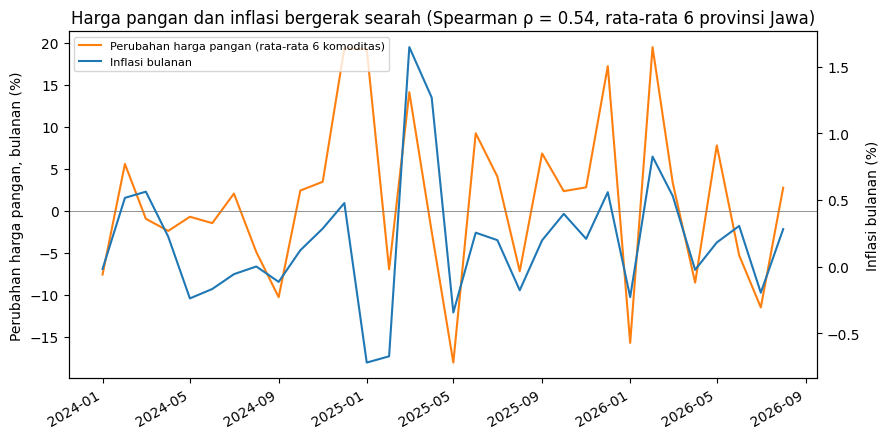

Problem
Food price spikes hit households directly. This project compares price movements of six strategic food commodities across six Java provinces with monthly inflation, and asks three questions:
- Which commodities and provinces were hit hardest by food price spikes in 2026?
- Was the September 2026 price high compared with each province's own normal range, not just the previous year?
- Do food price changes relate to monthly inflation?
Dataset
- Commodities: medium I rice, chicken meat, chicken eggs, shallots, red curly chili, red bird's-eye chili.
- Provinces: Banten, DKI Jakarta, West Java, Central Java, DI Yogyakarta, East Java.
- Prices: daily prices (working days) from 1 Dec 2023 to 30 Sep 2026, sourced from Bank Indonesia PIHPS, totaling 31,038 rows in long format.
- Inflation: monthly city-level inflation from BPS, Jan 2024 – Aug 2026, with 38 cities mapped to provinces.
Method
- Data cleaning: automatic cleaning of text dates and "Rp"-formatted prices. Small gaps were forward-filled up to 3 days (92 cells), leaving no missing values. Outliers more than 50% away from the 15-day rolling median were flagged but not removed.
- Volatility: standard deviation of month-over-month changes, Sep 2025 – Sep 2026.
- Year-over-year change and historical position: percent difference from median, z-score, and percentile per province.
- Link to inflation: Spearman correlation for each commodity and province pair, a combined six-commodity index, and a one-month lag test.
Volatility and yearly change
| Commodity | Volatility (SD of MoM, pp) | YoY Sep 2026 |
|---|---|---|
| Red bird's-eye chili | 36.2 | +91.5% |
| Red curly chili | 20.1 | −8.9% |
| Shallots | 12.4 | −14.9% |
| Chicken meat | 8.0 | +6.8% |
| Chicken eggs | 4.3 | −8.0% |
| Medium I rice | 0.8 | +3.6% |
YoY is the average of six provinces.
Key findings
- The 2026 spike was concentrated in red bird's-eye chili, at +91.5% YoY on average. The highest rises were in East Java (+117.2%), DI Yogyakarta (+113.5%), and Central Java (+97.7%). Part of the YoY figure reflects a low September 2025 base.
- The chili price was high, but within its normal range. It sat 21.6% to 35.9% above the provincial median, with z-scores of 0.6–0.8 (74th–79th percentile).
- Chicken meat and rice rose gradually rather than spiking. Their z-scores were 1.2–2.0, near the period's highest levels, while monthly changes in September 2026 were small.
- Food prices move with same-month inflation, but do not predict next month's inflation. The combined index correlated 0.53–0.58 with inflation across all provinces (p < 0.01). With a one-month lag, none of the 36 pairs was significant.

Limitations
- Provincial inflation is a simple average of city figures, not the official BPS provincial figure.
- Inflation data ends in August 2026, so the September 2026 spike cannot be compared with inflation.
- Correlation does not imply causation, and drivers such as exchange rates and weather were not analyzed.